The catalog
Every trail, ready to wander.
Browse the complete collection of published routes, from short day hikes to multi-stage adventures.
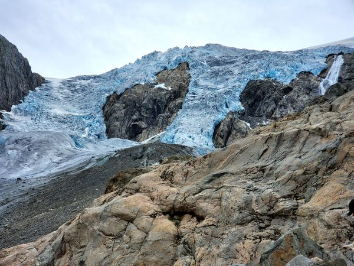
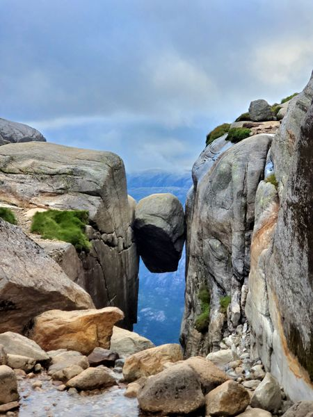
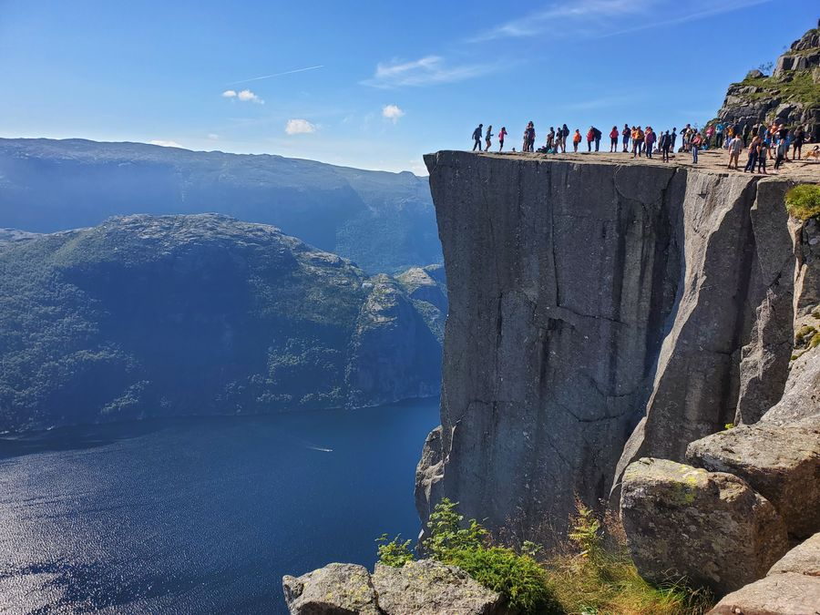

4 stages
Anello delle Dolomiti Friulane
hardA rugged 4-day loop around the wild dolomites of the Friuli-Venezia-Giulia region.
Open hike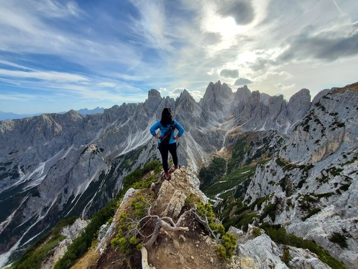

1 stage
Piancavallo - Hike to Forcella Palantina
moderateA day hike up to the rocky amphitheatre above Piancavallo
Open hike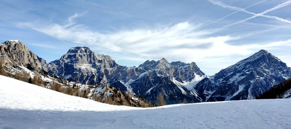
1 stage
Val di Zoldo - Hike above Città di Fiume
moderateA wintery day hike with wonderful views of the Dolomites
Open hike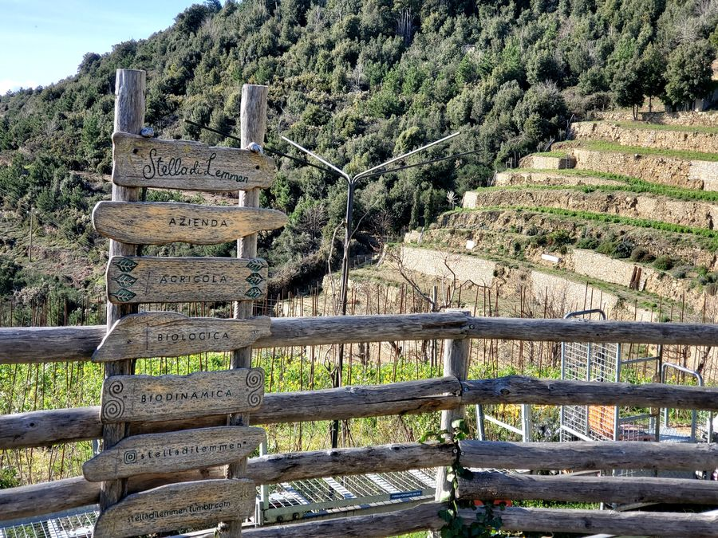
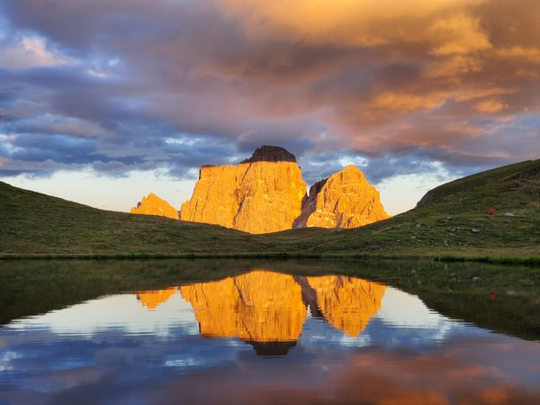
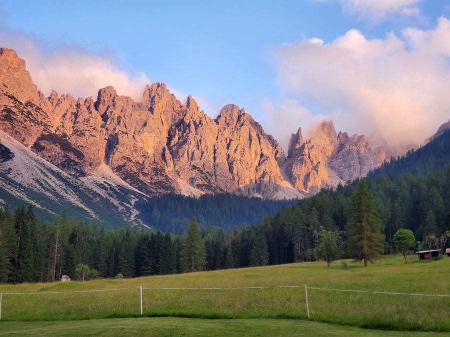
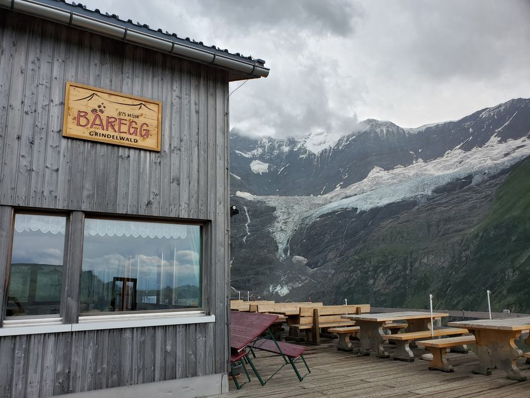
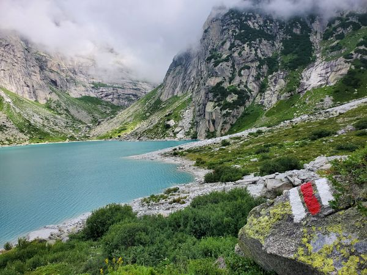
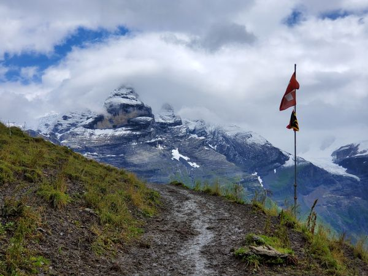
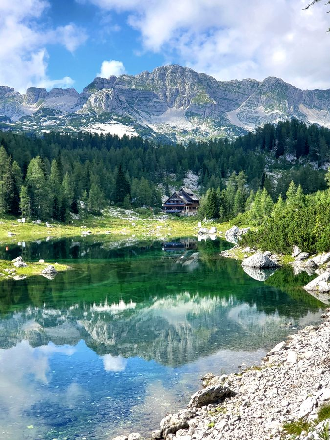
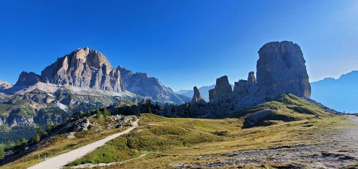
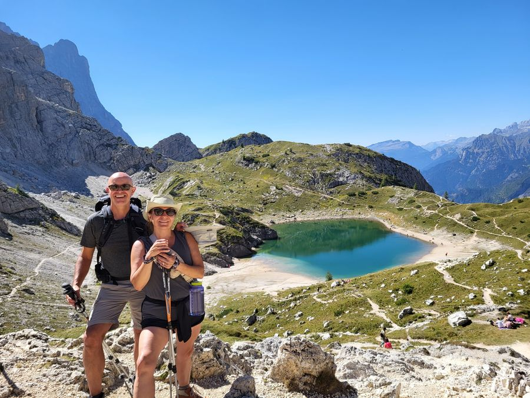
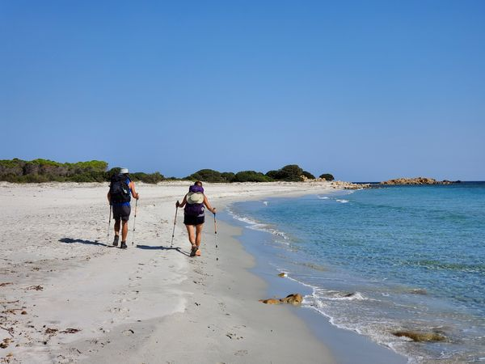
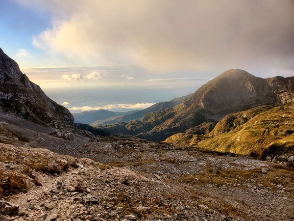
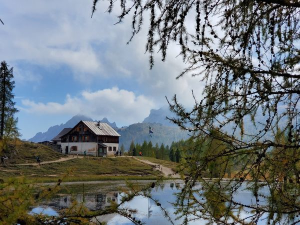
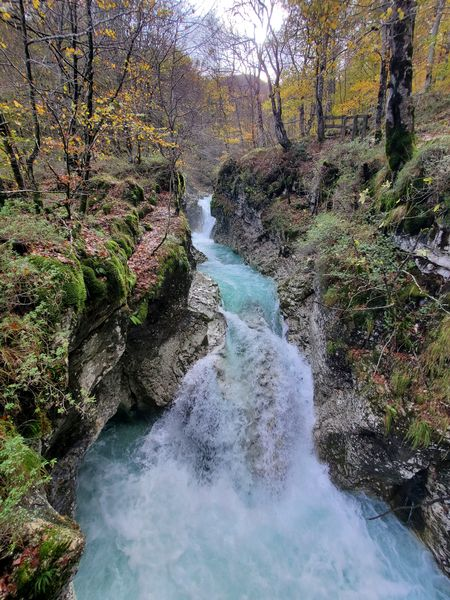
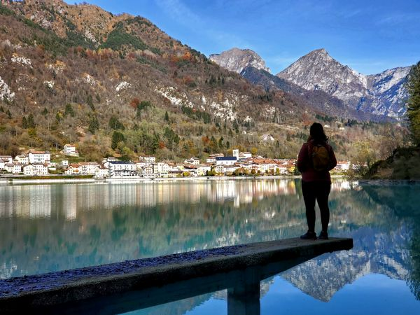

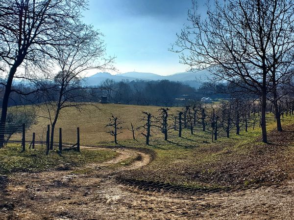
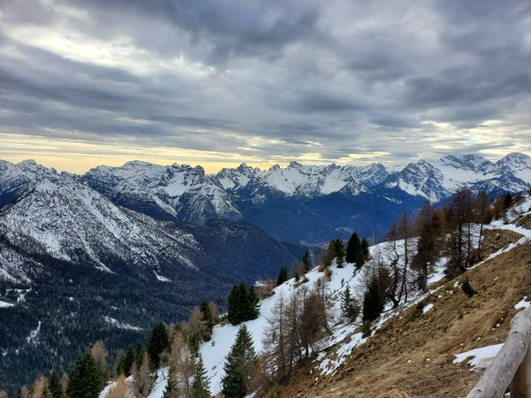
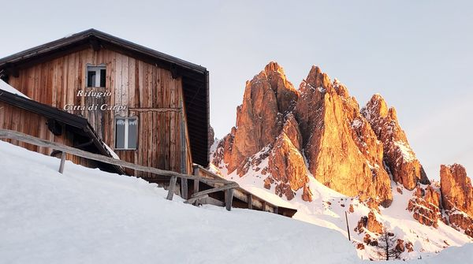
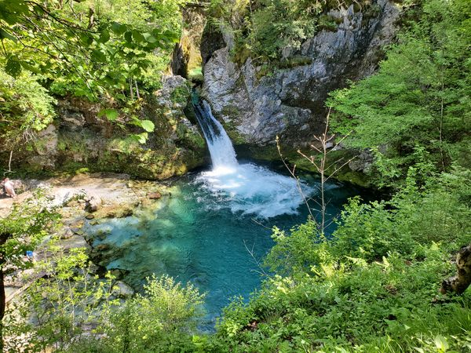
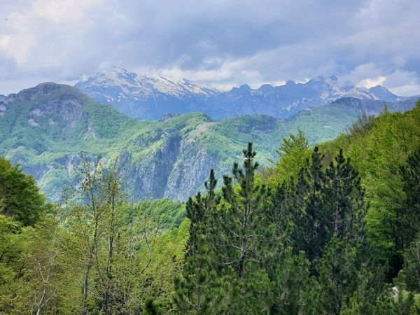
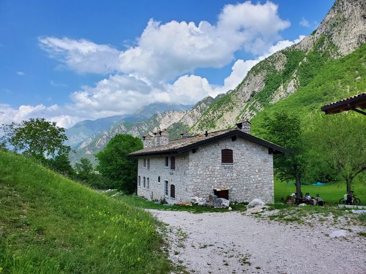
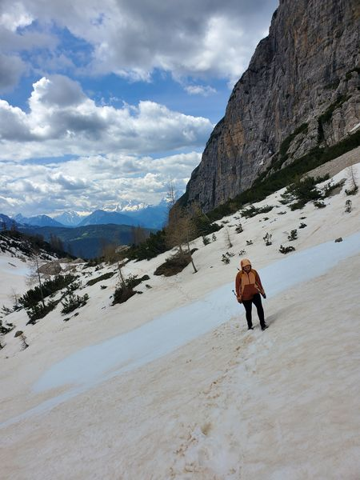
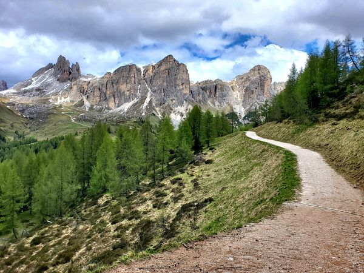
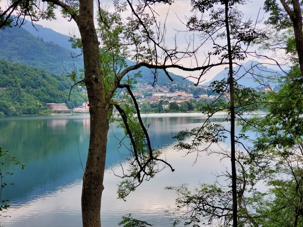
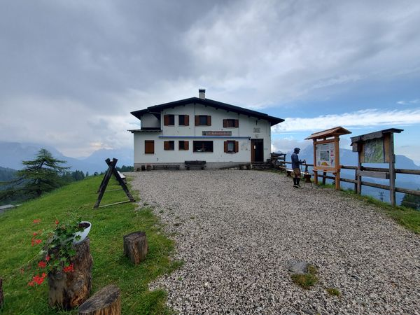

1 stage
Yoho National Park - Lake O'Hara Loop
hardA stunning day hike loop around Lake O'Hara with two epic ascents.
Open hike
5 stages
Killarney Provincial Park - La Cloche Silhouette Trail
hardA rugged 5-day backpacking loop through Killarney Provincial Park, known for its white quartzite ridges, clear lakes, and dense boreal forest.
Open hike